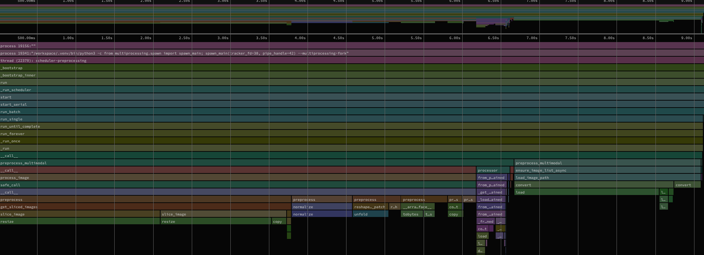
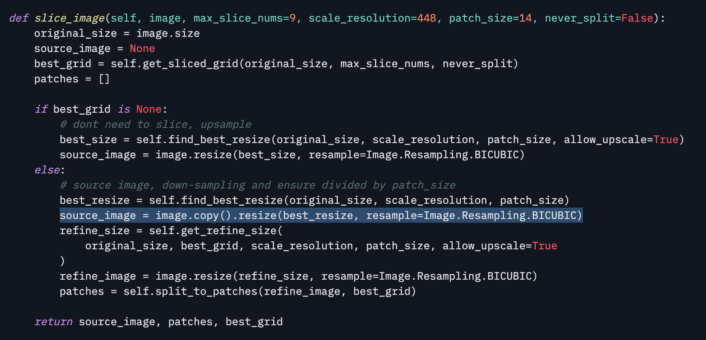
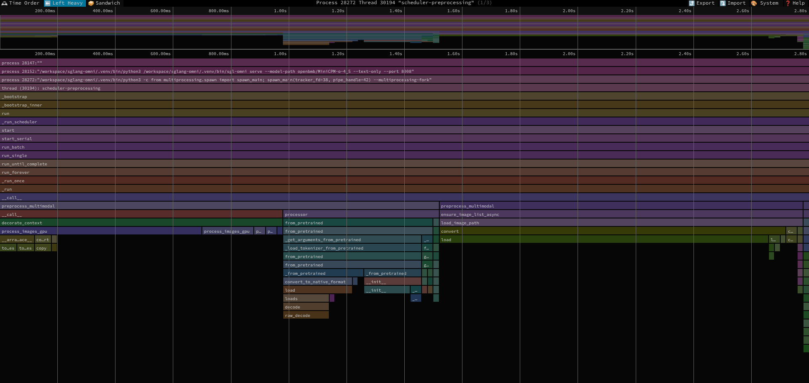

This wasn't even supposed to be a blog post btw, this started as a way for me to spend some time to understand the omni models present in sglang-omni. I'd never expected this to land as a PR #2487 in sglang-omni but here we are. I was particularly interested in the MiniCPM-o-4_5 and I would spend time reading the modules, the data flow and the CPU and GPU side operations involved in the end to end inference.
After a bit of experience with the repo, I wanted to start inspecting the heavy operations that were involved in the inference of the model. This is when I noticed something really strange, there seemed to be a huge blob of image pre-processing steps happening that was taking upto 30-40% of the runtime.
The end result is the preprocessing part got about 7.9x faster, time to first token dropped from 176 ms to 82 ms, and a full 128-token request dropped by 5.4%. So let's unpack what happened here.
Understanding the image processing step
Before an image can be fed to a vision encoder, it needs to go through a series of steps before it can become ready. In this case, the steps involve choosing a slice grid for large images, resizing the tiles, normalizing pixels and arranging them into a packed layout expected by the model.
This is a good reminder that some models have a complicated pre-processing stage before it can even enter into the serving engine.

Now back to this stage, where do you think this phase was happening in the current setup? Yes!, the original flow was using a slower pillow operation running on CPU. Ive shuffled the highest demanding operations to the right so you can see well, the pillow resize was one of the slowest operation taking upto 30% of the sampled thread time. Image decode was another noticeable chunk. There are also the other operations like normalization, patch unfolding, conversion, and the redundant copy but they arent very significant.
Doing the dumbest and fastest thing you can think of
I started going through the entire processing script and I noticed this specific line -
source_image = image.copy().resize(
best_resize, resample=Image.Resampling.BICUBIC
)
resize() already returns a new image, so the copy is redundant(maybe there is a reason for this but i couldnt understand why).
Quickly Removing it moved the median resize and crop time for my 2430 x 1114 image from 54.44 ms to 53.91 ms. That is only about 1%, but it is a free allocation and memory copy gone.

A bit more serious work
I wanted to port this entire stage to the CUDA cores instead of using CPU cores. My reason for this was majorly two things:
- It avoids preparing host tensors and then moving the packed result to the GPU.
- CUDA cores are probably better at applying the same operations across millions of pixels at once.
So this is what I exactly did. After pillow decodes the image, a triton kernel performs the separable bicubic resize, then GPU operations normalize the pixels and pack them into MiniCPM patches. The processor also caches the fixed-point resize coefficients for image-size pairs it has already seen. Remember before you do something like this, you need to ensure that the pixels don't diverge and you end up getting weird answers. In my case, I was able to match every pixel for each row.
This does not make image decoding a GPU operation. Decode is still on CPU, and after this change it became the most obvious remaining preprocessing hotspot. But the resize-to-tensor path no longer produces CPU tensors only to move them back to the GPU for the image encoder.
So what did we manage to accomplish?

The important visual difference is that the big preprocess plateau is gone. In the later stage, the wide green load block is the image decoder which is now the biggest remaining operation.
I tested on an NVIDIA A100 with the same image and prompt, generating 128 output tokens. The image-processor-only benchmark includes resizing, normalization, and patch packing, but excludes image decode and model inference.
| Measurement | CPU path | GPU path | Improvement |
|---|---|---|---|
| Image processor component | 47.02 ms | 5.98 ms | 7.86x |
| Median first text token | 176 ms | 82 ms | 53.7% |
| Median complete request | 1.543 s | 1.459 s | 5.4% |
| 60 requests, two workers | 46.33 s | 44.80 s | 3.3% |
The component number looks huge because it isolates exactly the work we optimized. Full request latency only saves about 84 ms, because the model still has to generate the remaining 127 tokens. For me, I'm very happy with the TFTT number here because the model now starts responding much sooner, which is the part a user can immediately feel.
Final Thoughts
The fun part of this experiment was that the optimization had nothing to do with writing a kernel. It began with me trying to understand the system a bit more in detail and a good observation.
I'm sure there is still more work to do if you start digging in deeper. For me personally, even if the entire request latency hasn;t dgone down by a lot, cutting the TFTT almost in half and optimizing a metric that the user can immediately see for himself makes the system feel much better.